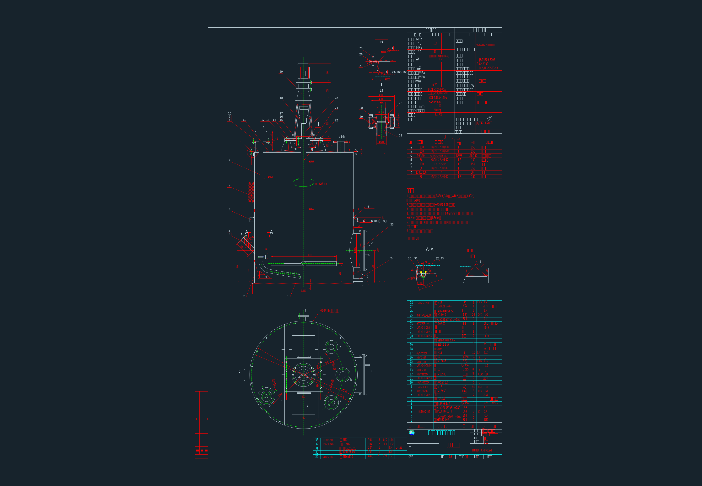

模型 · 量测与句柄 · 安装表 · 支承/空间复核 · 1.0保留版
稀碱预热槽 C41B03 · 2.0-C41B03-01
外部本体/接口、基础配合与安装复核；不展开内部工艺构造
平面R600图形半径1125，采用8/15换算，不能直接按图形1:1取数
Ø1550/1586/1638为明确标注；对应图形1556/1590/1642差异保留
厂家题名碱液稀释槽，上传文件对应C41B03；设备适用性及侧口细部待确认
现有1350搅拌总高保持；内部盘管与未标附件不展开
未标盖板厚、法兰厚和管外径系列为显示值；不得据此制造
各单台设备的工艺绝对方位待核；不凭文字插点新增位置
原始图纸、1.0、先前八类、建筑/桥架及原土建几何保持
